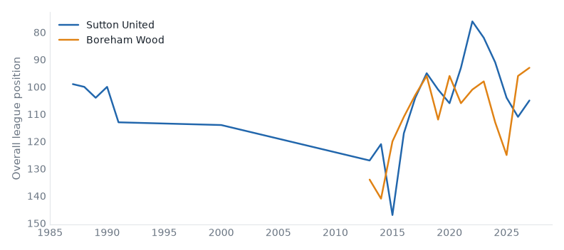
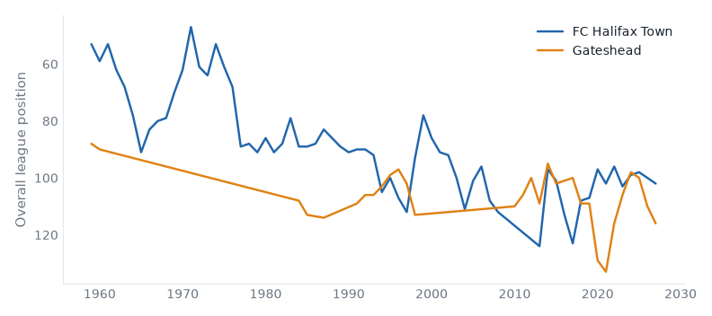

League One, League Two and the National League, 06 October to 12 October 2026. 36 results.Friday's preview.
Mansfield 2–1 Bromley. Friday's case: 2 above level, neighbours, yo-yo club, champions last season. Mansfield up from 17th to 14th; Bromley down from 19th to 21st.
Huddersfield 2–2 Sheffield Weds. Friday's case: fallen giant, below level, neighbours, yo-yo club, relegated last season. Huddersfield down from 3rd to 4th; Sheffield Weds down from 4th to 7th.
Bristol Rvs 1–3 Barnet. Friday's case: below level, above level, neighbours, yo-yo club. Bristol Rvs down from 5th to 9th; Barnet stay 2nd.
Leicester 1–3 Peterboro. Friday's case: fallen giant, 2 below level, yo-yo club, relegated last season. Leicester down from 14th to 17th; Peterboro up from 23rd to 20th.
Doncaster 1–0 Burton. Friday's case: above level, yo-yo club. Doncaster up from 21st to 16th; Burton down from 8th to 10th.
Stockport 3–1 Barnsley. Friday's case: fallen giant, below level, above level, yo-yo club. Stockport up from 5th to 3rd; Barnsley down from 18th to 19th.
Sutton 0–2 Boreham Wood compare
National League, Fri 09 Oct
Boreham Wood have 16 games unbeaten in a row, their longest run in their record. Boreham Wood have 35 points from 13 games, their best start in their record.

Halifax 4–1 Gateshead compare
National League, Sat 10 Oct
Gateshead have 4 points from 13 games, their worst start in their record.

Hornchurch 2–0 Eastleigh compare
National League, Sat 10 Oct
Eastleigh have 15 points from 13 games, their worst start in their record. Hornchurch have 21 points from 13 games, their best start since 2013/14.
Worthing 5–0 Solihull compare
National League, Sat 10 Oct
Solihull Moors have 7 points from 13 games, their worst start in their record.
Leicester 1–3 Peterboro compare
League One, Sat 10 Oct
Peterborough United beat Leicester City for the first time since 2012/13.
Milton Keynes Dons 1–5 Reading compare
League One, Sat 10 Oct
Reading beat MK Dons for the first time since 2003/04.
Notts County 1–2 Oxford compare
League One, Sat 10 Oct
Oxford United beat Notts County for the first time since 2015/16.
Stevenage 1–0 Wigan compare
League One, Sat 10 Oct
Wigan Athletic have 4 points from 8 games, their worst start since 1994/95.
Crawley Town 2–2 Chesterfield compare
League Two, Sat 10 Oct
Crawley Town have 5 points from 8 games, their worst start since 2005/06.
Boston Utd 1–2 Southend compare
National League, Sat 10 Oct
Southend United have 27 points from 13 games, their best start since 2005/06.
Fylde 2–0 Scunthorpe compare
National League, Sat 10 Oct
AFC Fylde have 23 points from 13 games, their best start since 2016/17.
Tamworth 1–2 Barrow compare
National League, Sat 10 Oct
Barrow beat Tamworth for the first time since 2014/15. Tamworth have 14 points from 13 games, their worst start since 2014/15.
| Sat 10 | Bradford | 0–0 | Leyton Orient | ↓1 | compare | |
| Sat 10 | Cambridge | 1–0 | Blackpool | ↑1 ↓3 | compare | best start since 2020/21 |
| Sat 10 | Doncaster | 1–0 | Burton | ↑5 ↓2 | compare | best start since 2021/22 |
| Sat 10 | Huddersfield | 2–2 | Sheffield Weds | ↓1 ↓3 | compare | |
| Sat 10 | Leicester | 1–3 | Peterboro | ↓3 ↑3 | compare | first win v Leicester City since 2012/13 |
| Sat 10 | Mansfield | 2–1 | Bromley | ↑3 ↓2 | compare | |
| Sat 10 | Milton Keynes Dons | 1–5 | Reading | ↓1 ↑1 | compare | first win v MK Dons since 2003/04 |
| Sat 10 | Notts County | 1–2 | Oxford | ↓2 ↑2 | compare | first win v Notts County since 2015/16 |
| Sat 10 | Plymouth | 2–1 | AFC Wimbledon | ↓2 | compare | |
| Sat 10 | Stevenage | 1–0 | Wigan | ↑4 | compare | worst start since 1994/95 |
| Sat 10 | Stockport | 3–1 | Barnsley | ↑2 ↓1 | compare | worst start since 2021/22 |
| Sat 10 | Wycombe | 1–4 | Luton | ↓3 ↑3 | compare |
| P | W | D | L | GD | Pts | ||
|---|---|---|---|---|---|---|---|
| 1 | Reading | 5 | 3 | 1 | 1 | +8 | 10 |
| 2 | Mansfield Town | 4 | 3 | 1 | 0 | +5 | 10 |
| 3 | Cambridge United | 5 | 3 | 1 | 1 | +2 | 10 |
| 4 | Stockport County | 5 | 3 | 0 | 2 | +5 | 9 |
| 5 | Plymouth Argyle | 5 | 3 | 0 | 2 | +3 | 9 |
| 6 | Huddersfield Town | 4 | 2 | 2 | 0 | +5 | 8 |
| 7 | AFC Wimbledon | 4 | 2 | 2 | 0 | +2 | 8 |
| 8 | Bradford City | 4 | 2 | 1 | 1 | +2 | 7 |
| 9 | Stevenage | 4 | 2 | 1 | 1 | +1 | 7 |
| 10 | Burton Albion | 5 | 1 | 3 | 1 | +1 | 6 |
| 11 | Sheffield Wednesday | 4 | 1 | 2 | 1 | +4 | 5 |
| 12 | Oxford United | 3 | 1 | 2 | 0 | +3 | 5 |
| 13 | Blackpool | 4 | 1 | 2 | 1 | +2 | 5 |
| 14 | Luton Town | 4 | 1 | 2 | 1 | +1 | 5 |
| 15 | Doncaster Rovers | 4 | 1 | 2 | 1 | 0 | 5 |
| 16 | Notts County | 4 | 1 | 1 | 2 | -1 | 4 |
| 17 | Peterborough United | 4 | 1 | 1 | 2 | -2 | 4 |
| 18 | Barnsley | 4 | 1 | 1 | 2 | -4 | 4 |
| 19 | Bromley | 4 | 1 | 1 | 2 | -6 | 4 |
| 20 | MK Dons | 4 | 0 | 3 | 1 | -4 | 3 |
| 21 | Wycombe Wanderers | 5 | 0 | 3 | 2 | -4 | 3 |
| 22 | Leicester City | 4 | 1 | 0 | 3 | -5 | 3 |
| 23 | Leyton Orient | 5 | 1 | 0 | 4 | -5 | 3 |
| 24 | Wigan Athletic | 4 | 1 | 0 | 3 | -5 | 3 |
| Sat 10 | Bristol Rvs | 1–3 | Barnet | ↓4 | compare | |
| Sat 10 | Cheltenham | 0–2 | Salford | ↓4 | compare | best start since 2020/21 |
| Sat 10 | Crawley Town | 2–2 | Chesterfield | ↑1 | compare | worst start since 2005/06 |
| Sat 10 | Fleetwood Town | 1–1 | Walsall | ↑2 ↑1 | compare | |
| Sat 10 | Newport County | 1–0 | Colchester | ↑3 | compare | |
| Sat 10 | Oldham | 0–0 | Accrington | ↑1 | compare | |
| Sat 10 | Port Vale | 1–0 | Grimsby | ↑1 ↓2 | compare | first win v Grimsby Town since 2020/21 |
| Sat 10 | Rotherham | 1–4 | Gillingham | ↓3 ↑6 | compare | first win v Rotherham United since 2017/18 |
| Sat 10 | Shrewsbury | 0–1 | Exeter | ↓4 ↑6 | compare | |
| Sat 10 | Swindon | 0–1 | Crewe | ↓4 | compare | best start since 2019/20 |
| Sat 10 | Tranmere | 1–1 | Rochdale | ↓1 ↑1 | compare | |
| Sat 10 | York | 1–1 | Northampton | ↑1 ↓1 | compare |
| P | W | D | L | GD | Pts | ||
|---|---|---|---|---|---|---|---|
| 1 | York City | 5 | 4 | 1 | 0 | +9 | 13 |
| 2 | Bristol Rovers | 5 | 4 | 0 | 1 | +4 | 12 |
| 3 | Salford City | 5 | 4 | 0 | 1 | +3 | 12 |
| 4 | Newport County | 5 | 3 | 2 | 0 | +5 | 11 |
| 5 | Barnet | 4 | 3 | 1 | 0 | +5 | 10 |
| 6 | Grimsby Town | 5 | 3 | 1 | 1 | +4 | 10 |
| 7 | Swindon Town | 5 | 3 | 1 | 1 | +4 | 10 |
| 8 | Cheltenham Town | 5 | 3 | 1 | 1 | +1 | 10 |
| 9 | Tranmere Rovers | 5 | 2 | 3 | 0 | +4 | 9 |
| 10 | Accrington Stanley | 5 | 2 | 3 | 0 | +3 | 9 |
| 11 | Crewe Alexandra | 5 | 2 | 3 | 0 | +3 | 9 |
| 12 | Exeter City | 5 | 2 | 3 | 0 | +3 | 9 |
| 13 | Rochdale | 5 | 3 | 0 | 2 | +2 | 9 |
| 14 | Chesterfield | 5 | 2 | 2 | 1 | +3 | 8 |
| 15 | Walsall | 4 | 2 | 2 | 0 | +3 | 8 |
| 16 | Colchester United | 4 | 2 | 2 | 0 | +2 | 8 |
| 17 | Gillingham | 5 | 2 | 2 | 1 | +2 | 8 |
| 18 | Port Vale | 4 | 2 | 2 | 0 | +2 | 8 |
| 19 | Oldham Athletic | 5 | 2 | 1 | 2 | +1 | 7 |
| 20 | Shrewsbury Town | 5 | 2 | 1 | 2 | 0 | 7 |
| 21 | Fleetwood Town | 5 | 1 | 3 | 1 | +1 | 6 |
| 22 | Rotherham United | 5 | 1 | 3 | 1 | -2 | 6 |
| 23 | Northampton Town | 4 | 1 | 2 | 1 | 0 | 5 |
| 24 | Crawley Town | 4 | 0 | 1 | 3 | -5 | 1 |
| Fri 09 | Sutton | 0–2 | Boreham Wood | ↓2 | compare | 16 games unbeaten, longest on record |
| Sat 10 | Altrincham | 3–1 | Aldershot | ↓2 | compare | best start since 2017/18 |
| Sat 10 | Boston Utd | 1–2 | Southend | ↓1 | compare | best start since 2005/06 |
| Sat 10 | Carlisle | 0–0 | Kidderminster | ↓3 | compare | best start since 2018/19 |
| Sat 10 | Forest Green | 2–4 | Hartlepool | ↑2 | compare | |
| Sat 10 | Fylde | 2–0 | Scunthorpe | ↓1 | compare | best start since 2016/17 |
| Sat 10 | Halifax | 4–1 | Gateshead | ↑3 | compare | worst start on record |
| Sat 10 | Hornchurch | 2–0 | Eastleigh | ↑3 | compare | worst start on record |
| Sat 10 | Tamworth | 1–2 | Barrow | ↑1 | compare | first win v Tamworth since 2014/15 |
| Sat 10 | Wealdstone | 0–6 | Yeovil | compare | heaviest defeat since 2020/21 | |
| Sat 10 | Woking | 0–1 | Harrogate | compare | 4 wins, longest since 2019/20 | |
| Sat 10 | Worthing | 5–0 | Solihull | compare | worst start on record |
| P | W | D | L | GD | Pts | ||
|---|---|---|---|---|---|---|---|
| 1 | Harrogate Town | 7 | 5 | 1 | 1 | +11 | 16 |
| 2 | Boreham Wood | 6 | 5 | 1 | 0 | +9 | 16 |
| 3 | Hornchurch | 6 | 5 | 0 | 1 | +7 | 15 |
| 4 | Altrincham | 6 | 5 | 0 | 1 | +6 | 15 |
| 5 | Yeovil Town | 7 | 4 | 2 | 1 | +10 | 14 |
| 6 | FC Halifax Town | 7 | 4 | 2 | 1 | +8 | 14 |
| 7 | Worthing | 7 | 4 | 1 | 2 | +6 | 13 |
| 8 | Barrow | 6 | 4 | 0 | 2 | +6 | 12 |
| 9 | Kidderminster Harriers | 7 | 3 | 3 | 1 | +3 | 12 |
| 10 | Southend United | 6 | 4 | 0 | 2 | +2 | 12 |
| 11 | Eastleigh | 7 | 3 | 3 | 1 | +1 | 12 |
| 12 | Aldershot Town | 6 | 3 | 1 | 2 | +4 | 10 |
| 13 | Tamworth | 6 | 3 | 1 | 2 | +2 | 10 |
| 14 | Sutton United | 7 | 3 | 1 | 3 | -3 | 10 |
| 15 | Carlisle United | 7 | 2 | 3 | 2 | +1 | 9 |
| 16 | AFC Fylde | 6 | 2 | 2 | 2 | +1 | 8 |
| 17 | Woking | 7 | 2 | 2 | 3 | -1 | 8 |
| 18 | Scunthorpe United | 5 | 2 | 1 | 2 | +2 | 7 |
| 19 | Forest Green Rovers | 7 | 2 | 1 | 4 | -3 | 7 |
| 20 | Hartlepool United | 6 | 2 | 0 | 4 | -2 | 6 |
| 21 | Boston United | 7 | 1 | 1 | 5 | -5 | 4 |
| 22 | Gateshead | 6 | 1 | 1 | 4 | -6 | 4 |
| 23 | Wealdstone | 6 | 1 | 1 | 4 | -8 | 4 |
| 24 | Solihull Moors | 7 | 1 | 0 | 6 | -11 | 3 |
Boreham Wood: 16 games unbeaten in a row, equalling their record (2026/27).
Worthing: 8 games unbeaten in a row; the record is 10 (2018/19).
Boreham Wood: 6 wins in a row, equalling their record (2025/26).
Barrow: 5 wins in a row; the record is 7 (2019/20).
Harrogate Town: 4 wins in a row; the record is 6 (2017/18).
Wigan Athletic: 4 games without scoring in a row, equalling their record (1982/83).
Harrogate Town: 3 clean sheets in a row; the record is 4 (2015/16).
Worthing: 2 wins in a row; the record is 4 (2016/17).
Built from the English football database, tiers 1–5 from 1958/59. Results from football-data.co.uk. Archived copy.